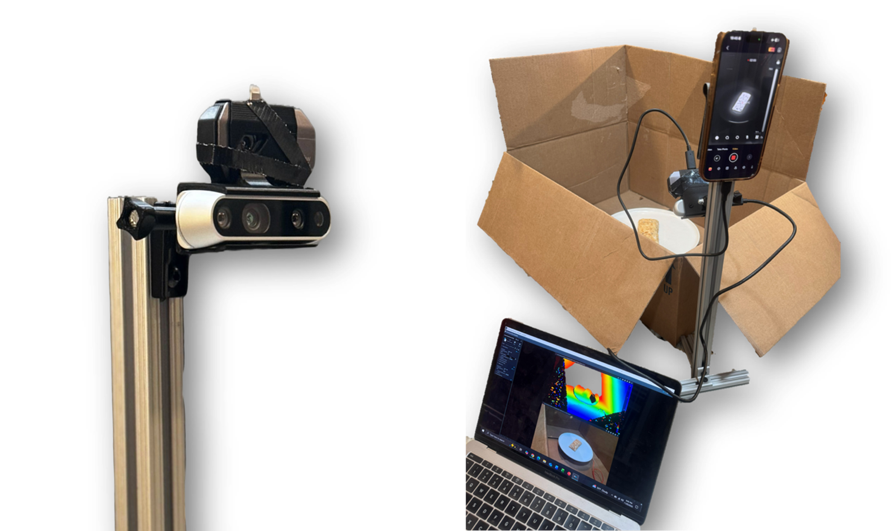
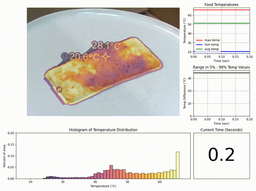

Visualization and 3D Modeling of Microwave Food
Overview
Uneven microwave heating is a near-universal frustration — a Hot Pocket scalding on one end while still frozen in the middle. This project proposes a computer-vision-driven solution: a system of thermal, RGB, and depth cameras mounted inside a microwave that can monitor food temperature in real time, generate a 3D model with heat distribution annotated on it, and provide the user with actionable heating guidance.
The project was built as an early-stage proof of concept. Data was self-generated by recording food (Hot Pockets, bagel bites, frozen pizza, potato) on a rotating electric turntable inside a cardboard enclosure using a Topdon T002 thermal camera and an Intel RealSense D435 RGB-D camera.

Thermal Analysis
Per-frame thermal analysis extracts the food's max, min, and average temperatures from the grayscale thermal image using Optical Character Recognition on the camera's auto-scale temperature readout. Pixel intensities are then linearly mapped to the extracted temperature range, producing a per-pixel temperature array for the segmented food region.
Features tracked over time include the temperature range (5th–95th percentile to suppress annotation noise), a pixel-level temperature histogram, and running time-series plots of min/max/average temperature. These are visualized in a real-time GUI dashboard. A conceptual microwave control algorithm — where the oven turns on and off intermittently to drive the food's temperature histogram toward a tight normal distribution around a user-specified target — was designed but not yet implemented in hardware.

3D Model Generation
Two methods for generating a 3D model of the rotating food were developed and compared: Classical stereo vision and Neural Radiance Fields (NeRF). My contribution lay in classical methods
Stereo depth camera approach: Using the Intel RealSense D435, depth and RGB frames are captured as the food rotates. Frame subtraction between consecutive grayscale frames isolates the moving food from the static background, producing a binary mask applied to the depth channel. Per-frame point clouds are created with Open3D and fused incrementally using Iterative Closest Point (ICP) registration. Every third frame of the first 275 frames is analyzed for computational efficiency. The final fused point cloud captures the full surface of the food.
Results & Key Takeaways
Both 3D approaches produced usable models of the food surface. The stereo depth method is faster and more hardware-independent but leaves voids on the underside. NeRF produces a more complete mesh but requires a GPU and significantly more processing time. For a real product, NeRF is the more robust path; for edge deployment with latency constraints, the stereo approach is preferable.
The thermal analysis pipeline runs at near-video-rate (~15fps) and extracts meaningful temperature distribution features. The next step is integrating thermal data directly into the 3D mesh — so heat can be visualized on the 3D model surface rather than only in 2D — and connecting the analysis output to real microwave hardware controls.
Skills & Tools
Python · OpenCV · Open3D · PyTesseract · Intel RealSense SDK · SAM 2 · Thermal Imaging · Point Cloud Processing · ICP Registration · Affine Transforms · Computer Vision · 3D Reconstruction
← Back to Projects